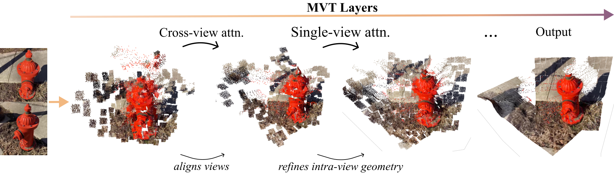
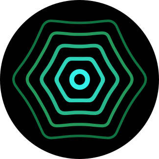
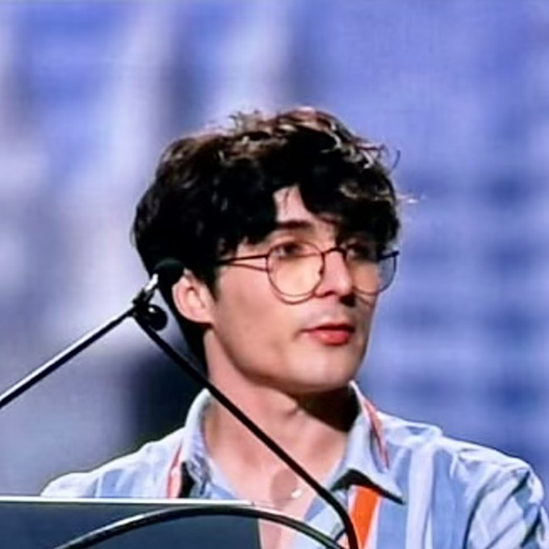
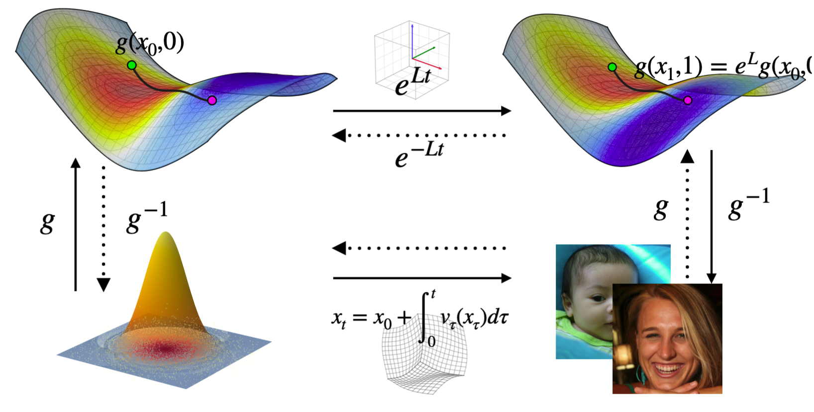
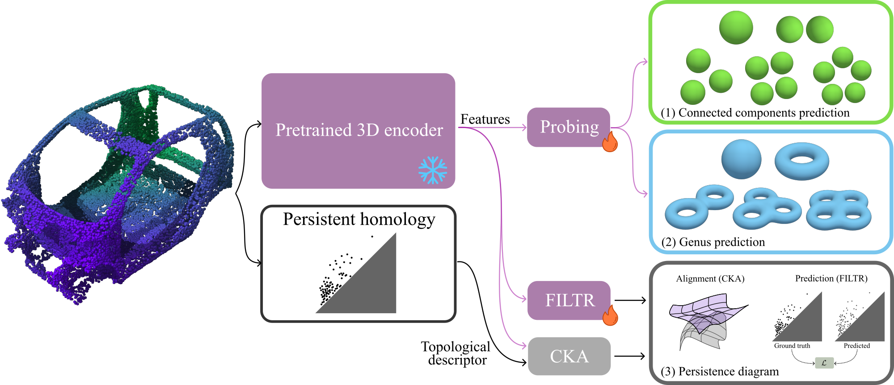
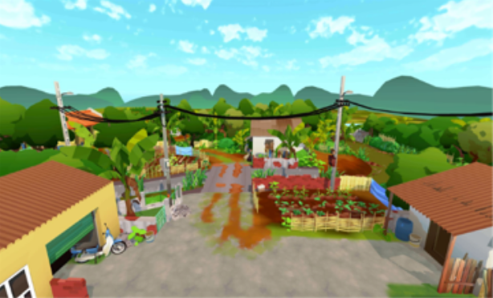

NeurIPS 2026
Co-founder & Head of Fundamental Research at 
I am co-founder and Head of Fundamental Research at Lamarck Labs, where I work on representation learning and 3D computer vision. Prior to this, I graduated from Télécom Paris and MVA Master's program at ENS Paris-Saclay.

"Understanding Multiview Transformers" has been accepted to NeurIPS 2026!
"Unfolding Generative Flows with Koopman Operators: Trajectory-Preserving Linearization" has been accepted to ICML 2026!
FILTR has been accepted to CVPR 2026 as an oral presentation!
I am joining the LIX as a research intern, advised by Prof. Maks Ovsjanikov
I have started the MVA (Mathematics, Vision, Learning) M2 program at ENS Paris-Saclay
I am joining M2B3 Lab (McGill University, Montreal, Canada) as a Graduate Research Trainee
I am joining ACROSS Lab (IRD, Hanoi, Vietnam) as a research intern
Reviewer: SIGGRAPH Asia 2026 and Transactions on Machine Learning Research (TMLR)



